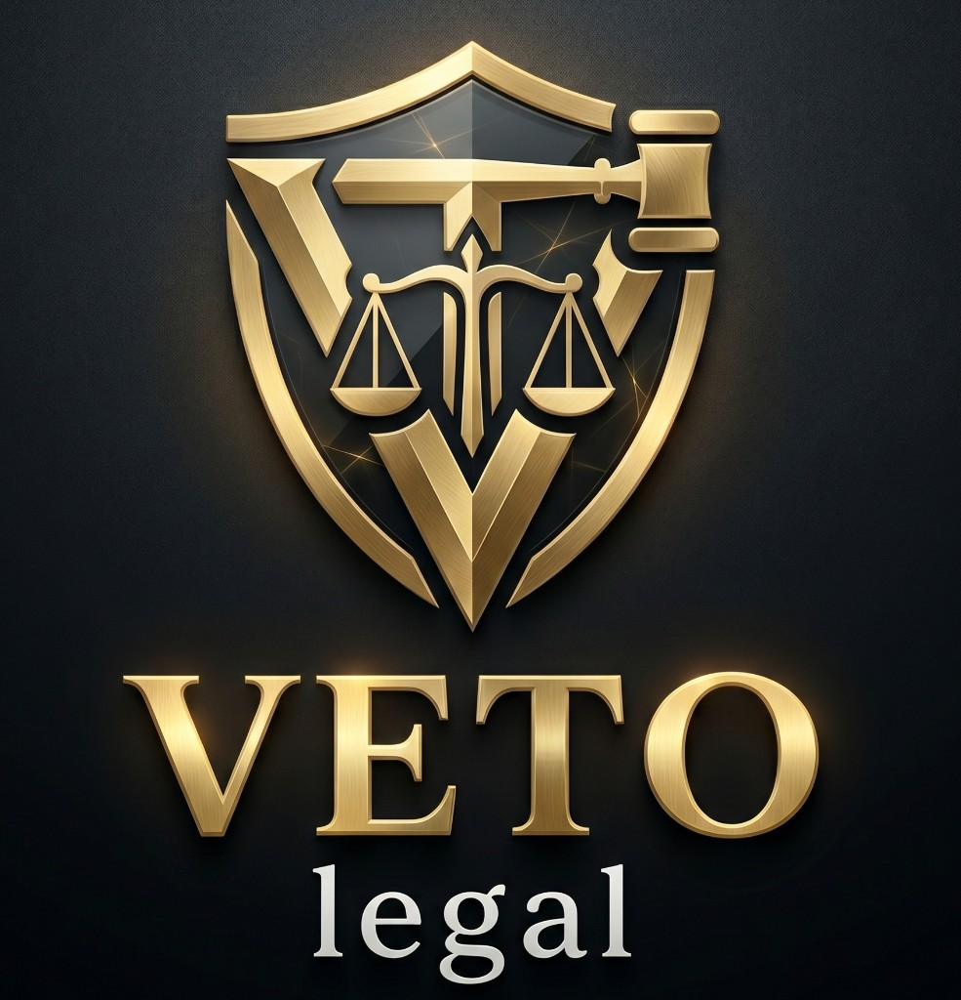

VETO Legal
מערכת הפעלה משפטית · SOS · כספת · AI
מסמך סקירה לעורכי דין
סקירת מערכת מלאה
חוברת זו מציגה את VETO Legal מקצה לקצה — חוויית האזרח, לוח עורך הדין,
תשתיות החירום, הכספת, המנויים והפרטיות — לצורך חוות דעת מקצועית.
VETO Legal היא פלטפורמת חירום משפטית שמחברת אזרח בזמן אמת
לעורך דין זמין — בווידאו, באודיו או בצ׳אט — תוך תיעוד מאובטח בכספת דיגיטלית.
המוצר מיועד לרגעים הקריטיים: חקירה, תאונה, עימות משפחתי, או כל סיטואציה
שבה נדרשת נוכחות מקצועית מיידית.
שיגור SOS חי
שיחות Agora מוצפנות
כספת ראיות
מחולל מסמכי AI
מנויי PayPal
רב־לשוני
מטרת המסמך:
לקבל מכם, כעורכי דין, חוות דעת כנה על החוויה, על הערך המקצועי,
על נקודות הסיכון, ועל מה שחשוב לתקן לפני הרחבת הרשת.
שלושה קהלים במערכת
אזרח
SOS, שיחה, כספת, מחולל מסמכים, מנויים, צ׳אט, חוזים/משימות, יומן והגדרות.
עורך דין
דשבורד זמינות, תור קריאות חי, קבלת מקרה, שיחה, גישה לצ׳אט ולכספת.
מערכת / אדמין
אישור עורכי דין, מדדים, מדיניות, ניהול כספת והגדרות תשתית.
ציבור / שיווק
דף בית, מחירים, מדריכי חירום, הרשמה, כניסה, תנאי שימוש ופרטיות.
פרק 02 · צילום חי מהאתר
דף הבית — ההבטחה לציבור
02
המסר המרכזי: «עורך דין לצידך, בדיוק בשנייה הקריטית» — חיבור מיידי, הצפנה, ותיעוד.
צילום מסך חי · / · אוגוסט 2026
מה מוצג לציבור
הבטחת מענה בשניות — אלגוריתם Race-to-accept לעורכי דין זמינים
הצפנה מקצה לקצה לשיחות וידאו/אודיו/צ׳אט
כספת ראיות בענן עם גיבוי בזמן אמת
מסלולי הצטרפות נפרדים לאזרח ולעורך דין
שפת ממשק: עברית / English / Русский
פרק 03 · צילום חי מהאתר
מנויים ומחירים
03
מודל התשלום מבוסס מנויי PayPal. מטרת השקיפות: האזרח מבין מראש מה כלול,
מתי נגבה ייעוץ, ומה קורה בדקות נוספות בשיחה.
צילום מסך חי · /pricing
מסלול
מהות
הערות לעו״ד
דמו היכרות עם הפלטפורמה ללא שיחות SOS פעילות
מאפשר התנסות בטוחה לפני מנוי משלם
רגיל משתמש יחיד · SOS · כספת · מחולל מסמכים
ייעוץ מתומחר; דקות נוספות לפי מדיניות המערכת
משפחתי עד 4 משתמשים · שיחות כלולות · ניהול משפחה
מתאים למשקי בית / לקוחות חוזרים
פרק 04 · צילום חי מהאתר
הצטרפות עורכי דין
04
מסלול ההרשמה לעו״ד נפרד מהרשמת אזרח. נדרשים פרטי רישיון, ותק ותחומי התמחות.
האישור מתבצע על ידי מנהל המערכת — כדי לשמור על רשת מאומתת בלבד.
צילום מסך חי · /register/lawyer
מה נאסף בהרשמה
שם, טלפון, רישיון, ותק, התמחויות (פלילי / משפחה / מקרקעין / עבודה / מסחרי / תעבורה ועוד).
אחרי האישור
גישה לדשבורד, מתג זמינות, תור SOS חי, וקבלת מקרים בזמן אמת.
פרק 05
יום העבודה של עורך הדין במערכת
05
לוח בקרה — /dashboard
זמינות מקוונת: מתג «מחובר / לא מחובר» + התראות דפדפןתור SOS חי: מקרים ממתינים לפי דחיפות, קרבה ושפהקבלת מקרה: Race-to-accept — מי שמאשר ראשון נכנס לשיחהלשוניות: דשבורד · ניהול קריאות · כספת · צ׳אט · תורים · פרופיל
חדר השיחה — /call/[channel]
וידאו / אודיו / צ׳אט בלבד — לפי בחירת האזרח
הצפנה, יציבות רשת, שיתוף מסך, סינון רעש, כתוביות ותרגום
הקלטת ענן — רק בהסכמת האזרח (מנגנון GDPR מפורש)
בסיום: סיכום שיחה + תוכנית פעולה + שמירה לכספת
נקודה חשובה לחוות דעתכם:
האם מודל ה־Race-to-accept, שיתוף המיקום, וההקלטה בהסכמה — מרגישים
לכם הולמים מבחינה מקצועית ואתית? נשמח למשוב ישיר על זה.
שער הכניסה למערכת · /login · (אזורי אזרח/עו״ד מחייבים התחברות)
פרק 06
חוויית האזרח — מ־SOS ועד הכספת
06
מסך
תפקיד
נתיב
מוקד חירום
כפתור SOS, בחירת התמחות, חיפוש עו״ד, פתיחת שיחה
/hub
כספת ראיות
העלאת קבצים, תיקיות, חותמת שלמות, סנכרון הקלטות
/vault
מחולל מסמכים AI
טיוטות משפטיות, הקלטה קולית, ייצוא PDF/Word
/vault/generator
מנויים
דמו / רגיל / משפחתי דרך PayPal
/plans
משפחה
ניהול מושבים במנוי משפחתי
/family
צ׳אט
שיחות עם עו״ד + עוזר AI
/chat
חוזים ומשימות
פרודוקטיביות משפטית יומיומית
/productivity
יומן
יומן משפטי + סנכרון Google Calendar
/calendar
הגדרות ופרטיות
פרופיל, אבטחה, חיוב, זכויות נושא מידע
/settings · /privacy-rights
מדריכי חירום לציבור
צילום מסך חי · /playbooks · חקירה / תעבורה / משפחה
פרק 07 · צילום חי מהאתר
אמון, פרטיות ומסגרת משפטית
07
שכבת האמון היא חלק מהמוצר: תנאי שימוש, מדיניות פרטיות, עוגיות,
הסכמת הקלטה בשיחה, ושקיפות לגבי שימוש ב־AI.
צילומי מסך חיים · /terms · /privacy
הפלטפורמה מוצגת ככלי טכנולוגי — לא כתחליף לייעוץ פרונטלי בכל מצב
יחסי עו״ד–לקוח נוצרים מול עורך הדין המטפל, לא מול «המערכת» כגוף מייעץ
הקלטת שיחה רק בהסכמה מפורשת של האזרח
זכויות נושא מידע: ייצוא / מחיקה / תיקון דרך /privacy-rights
כרגע מוצג באנר טיוטה עד להשלמת סקירה משפטית פורמלית
צילום מסך חי · /contact
פרק 08
בידול, שאלות לחוות דעתכם
08
בידול
למה זה חשוב לעו״ד
שיגור SOS + Race-to-accept
הזדמנות למענה מיידי, עם שליטה בזמינות שלכם
כספת חתומה (שלמות קובץ)
תיעוד מסודר יותר לשיחה, הקלטה ומסמכים
Agora בזמן אמת
שיחה יציבה, אופציות וידאו/אודיו/צ׳אט
מסמכי AI
סיוע בניסוח — תחת אחריות ובקרה אנושית
רב־לשוני
שירות לקהלים דוברי עברית, אנגלית ורוסית
נשמח לתשובותיכם על
האם הממשק ברור ומכובד מספיק עבור לקוחותיכם?
האם תהליך קבלת המקרה מרגיש הוגן ומקצועי?
אילו התמחויות / אזורי שירות כדאי להרחיב קודם?
מה חסר כדי שתרגישו בנוח להמליץ על המערכת?
הערות על פרטיות, הסכמות, תיעוד והקלטות
תמחור: האם המודל מובן והוגן כלפי האזרח והעו״ד?
בקשה:
אפשר להגיב חופשי — גם ביקורת חדה מסייעת. אנחנו מחפשים אמת מקצועית,
לא מחמאות.
לצפייה חיה
https://web-nine-gamma-76.vercel.app
הצטרפות עו״ד
/register/lawyer — לאחר מילוי הפרטים ממתינים לאישור מנהל.
כניסה למערכת
/login — Google / אמצעי הזדהות נתמכים בממשק.
יצירת קשר
/contact — לערוץ ישיר עם הצוות.
צילום מסך חי · /register · מסלול האזרח להשוואה
תודה על הזמן והשיקול המקצועי. המשוב שלכם ישפיע ישירות על סדר העדיפויות
בפיתוח, על ניסוחי ההסכמה, ועל אופן הרחבת רשת עורכי הדין בישראל.

VETO Legal OS · מסמך פנימי לשיתוף עם עורכי דין · אוגוסט 2026